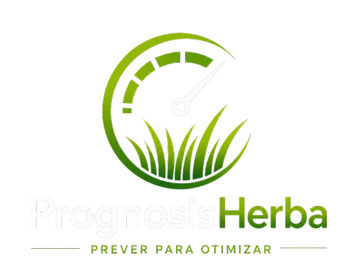

Ao vivo
Captura de imagem da estação fixa e segmentação de cor (HSV) identifica a grama contra o fundo — sem depender de modelo treinado ou GPU.
A leitura de altura segue direto para a IA de previsão de crescimento, junto com o dado de clima da estação.
Cada medição captura 5 vezes e calcula a mediana, eliminando o efeito de ruído (sombra, vento, um ramo isolado) em uma única leitura.
Resultado: alta assertividade por medição e uma assertividade média validada em bateria de testes reais.
Investimento
Inteligência
HistGradientBoostingRegressor
Recebe o histórico de leituras de altura e clima de cada região, publicado pela estação de captação. Devolve a previsão de crescimento semanal por trecho, incluindo a data em que a altura deve cruzar o limite de poda.
É um ensemble de árvores de decisão treinado com dados de todas as regiões ao mesmo tempo (região e clima como variáveis categóricas), aprendendo o padrão de crescimento a partir do tempo desde a última poda e das condições climáticas.
Alocação das equipes de poda
Consome periodicamente as previsões de crescimento e filtra os trechos que estão se aproximando do limite de poda. Publica o cronograma direto para o aplicativo das equipes em campo.
Um solver de programação linear inteira distribui os trechos entre as equipes disponíveis, respeitando dias úteis e capacidade diária de cada equipe, priorizando sempre os locais mais urgentes.
Precisão preditiva
Em termos simples
É um modelo de gradient boosting: várias árvores de decisão simples são treinadas em sequência, cada uma aprendendo a corrigir o erro da anterior. O resultado é um previsor que aprende o padrão de crescimento da grama a partir do histórico de altura, clima e tempo desde a última poda.
A cada nova leitura, o modelo recalcula a previsão e aponta a semana em que a altura deve cruzar os 10 cm — sempre dentro de um intervalo confiável para agendar a poda com antecedência.
Otimização
Em termos simples
É a área da matemática aplicada que usa modelos para encontrar a melhor decisão possível entre milhares de combinações — respeitando regras e limites reais, como tempo, capacidade e prioridade.
Um solver de programação linear inteira decide, para cada local que se aproxima do limite de poda, qual equipe poda e em qual dia — maximizando os locais de maior prioridade atendidos dentro do mês.
Cada local é podado no máximo uma vez por mês, cada equipe tem uma capacidade diária conforme a dificuldade do terreno, e os locais mais urgentes sempre entram primeiro na agenda.
Agora vamos apresentar o painel completo funcionando ao vivo — telas do administrador e o aplicativo dos podadores.
Por que ganhar
Fácil captura dos dados
Modelagem matemática inovadora para captura dos dados
Melhor gerenciamento da altura da grama nas estradas
Modelo preditivo de ML para o crescimento da grama
Modelagem matemática inovadora para gerenciamento dos podadores
Aplicativo centralizando toda a operação